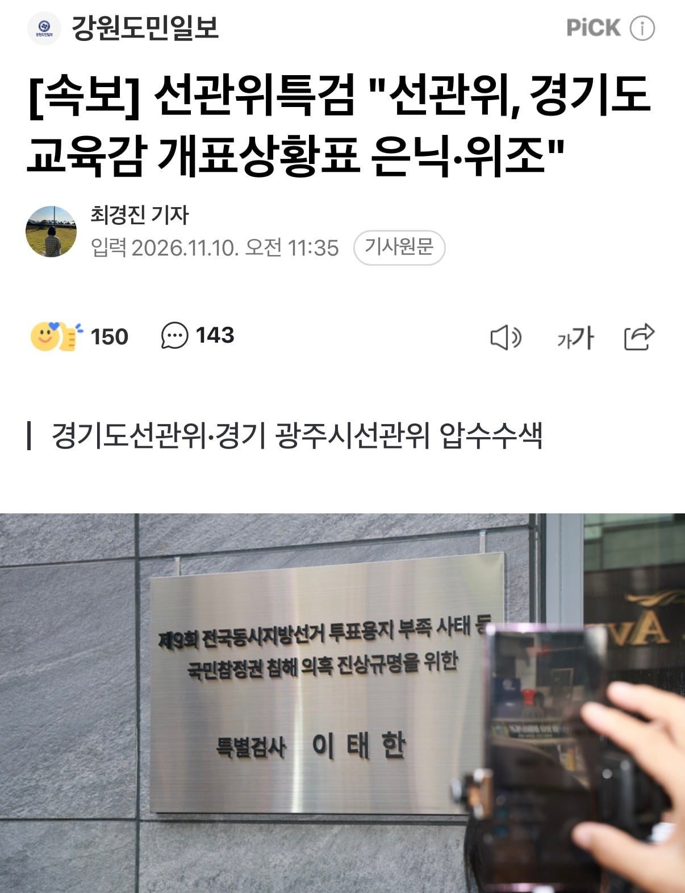

[속보] 선관위특검 "선관위, 경기도교육감 개표상황표 은닉·위조"
댓글
그러니까 니가 하고싶은 말은 거대한 어떤 세력이 뭔가 조작해서 고의로 투표지를 누락시켰고 언론사에 미리 사주해서 특정 정당이 졌다고 발표하라고 시키고 고의로 출구조사 이후 투표지 재공급해서 선거 결과를 뒤집었다고 말하고 싶은거임? 하고싶은 말이 있으면 좀 조리있게 누구나 들어도 이해 가능하게 좀 써봐 댓글로도 웅얼거리지좀 말고 ㅋㅋ
그리고 니가 하고싶은 말이 저게 맞다면 "검찰 수십명이 달라붙어도 밝혀내지 못한 어떤 거대한 암흑 세력과 선관위 그리고 언론 그리고 그 작업에 필요한 수백 수천명의 사람을 매수해서 일으킨 전국적 대사기극" 이라고 믿는 것 보단 그냥 "선관위 찐빠" 라고 이해하는게 지극히 상식적이고 합리적인 "인간"이 취해야할 사고의 결론 아니겠음? ㅋㅋ
저거로 인해 47표가 반대로 입력됐대. 총 득표수는 38만표차
1표라도 표를 세는새끼가 잘못입력했다는게 진짜 어메이징한 사건이지
진짜 개미쳤네
선관위 직원 전부 고문해야됨 ㄹㅇ
근데 이거로 원래 당선 안됐던 ㅇㄱㄸ들 전부 부정이네! 이렇게 해석하는 병신들이 넘쳐남
그것도 존나 골때리긴해 당선 자체의 결과가 바뀌는건 아닌데 선관위는 진짜 걍 개박살내야된다고 생각함
이새끼들 등뒤에 사법부가 버텨줘서 무소불위의 권력임 ㄹㅇ
어렵네
한 표는 좆임?
뭐 내가 저게 잘못된게 아니라그랬냐 ㅋ
개표상황표면 얼마 깠다고 tv에 띄워주는 그거임?
ㄴㄴ 저건 개표 결과 얘기
https://m.ytn.co.kr/news_view.php?s_mcd=0103&key=202611101106325942&pos=
내용이 얼마 없어서 추측이 어렵네 개표상황표를 가라쳐서 결과적으로 총득표수도 틀렸다. 그래서 선관위에서 이걸 숨겼다 이런 뜻인가
https://naver.me/FriUgVmQ
가라친것도 아니고 찐빠낸걸 숨긴거네
ㅇㅇ 위조 은닉
어우 시발새끼들 선거 조작을 권력자들이 일으키니까 그거 막으려고 독립기관 만들어줬더니 니미
음모론 내란견 타령하던 새끼들 어디감?ㅋㅋ
절대 조작 불가라며ㅋㅋ
ㅋㅋㅋ 만 칠게요
부실ㅋㅋㅋㅋㅋㅋㅋㅋㅋㅋㅋㅋㅋㅋ
에휴ㅋㅋㅋㅋㅋㅋㅋ선관위는 음모론 그냥 쳐 맞아라 업보다 업보
ㅋㅋㅋㅋㅋㅋㅋㅋㅋㅋㅋㅋㅋㅋㅋㅋㅋㅋ 대깨
근데 이거 개표 상황표가 은닉 위조된거라는데, 실제 득표숫자도 달라진건가? 그건 아니겠지 설마?
개표 결과 위조
https://naver.me/FriUgVmQ
그니까 이게 실시간 개표 현황과 달라진건지, 최종 결과랑 달라진건지가 중요한거잖아? 실시간 개표 현황과 달라진거면 선관위 철퇴인거고, 최종결과랑 달라진거면 선관위 철퇴정도가 아니라 문제가 어마어마해 지는건데
특검팀은 지난 지방선거 당시 경기도교육감 선거와 관련해 광주시선관위 직원이 개표상황표를 은닉하고 위조해 개표 결과가 실제와 달라졌고, 광주시선관위가 이 같은 은닉·위조 사실을 숨기려 개입한 것으로 보고 있다.
개표 결과가 달라졌다고
개표 관리가 부실해서 개표 오차가 생기니 그거 조정한다고 그냥 결과값 바꿔버리는 편의 주의로 한거같은데
생각보다 이게 좀 오래전부터 해왔던것같기도.. 인구수 적은 지방 시골같은곳은 수십표 차이로 결과가 바뀌는데 진짜 당락이 바뀌었을수도 있겠네
고의로 했다기 보다는 실수한거 수습하려 했는데 절차를 좀 행정편의주의적으로 처리해서 조작 이야기가 나로는듯
이정도면 저새기들 고문정도는 해서 실토하게 해야함
난 이해가 안가는게, 투표용지 개 부족해서 출구조사 결과 나오고도 연장투표한거 잊었냐?
심지어 그 출구조사는 한정당이 진걸로 나옴, 결과는? 출구조사가 틀렸지.
이게 니 수준이야?